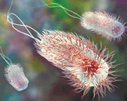
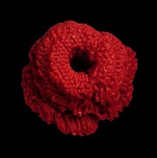
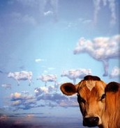
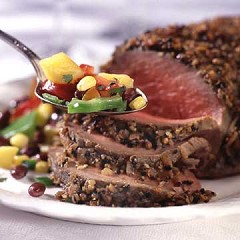

紧急四谈大肠菌
冯冯
|  |  |
关于大肠菌，写过三次，这是第四次的老生常谈，可能有人嫌啰。不过，美国加拿大的电视新闻，二０００年六月廿四夜，又再发出严重警告：大肠菌（Ｅ.ｃｏｌｉ） 第四次侵袭美加，这是一九九七至今的第四次紧急警报，已经有数十人中毒死亡。
警报说：美加两国政府卫生部分别同时发出警报，说已有数十人因吃了未煮熟的牛肉而被大肠菌毒死，美加两国的几家最大规模的食品连锁公司宣布，紧急收回绞碎的牛肉，一家收回十万磅，另一家收回五万六千磅。一家最大的世界性牛肉汉堡饱公司，收回碎牛肉二十万磅，都予以销毁，不让上市，以免再有顾客中毒死亡。
电视新闻说，医学家警告，时值夏季炎热，肉类腐烂迅速，大肠菌繁殖迅速，先寄生在已剥皮的全牛表肤，继之侵入肉内，一夜之间，可以传遍全场牛肉。加以绞肉机器不洁，积藏大肠菌，传入绞肉包装机器不洁，将大肠菌传播市场及餐馆。几天之内，席卷全美全加，传染了那只餐馆，还传到几乎每一家庭的厨房。
医生说：这是自从英国疯牛症之后，最严重的牛肉大肠菌疫情，一般人喜吃半生熟的碎肉煎饼夹心面包，不知大肠菌已经先侵入了牛肉内。大肠菌生命力强劲，必须在华氏一千度左右才可保证将它杀死。普通家庭烹任温度只有华氏一百至两百度，未足杀死大肠菌，半生熟的牛肉饼，正是大肠菌的最佳温床。很多人吃了，会首先出现的症状是：肚子痛、呕吐、头痛、下泻，跟着来的是高烧，后期是昏迷，渐渐死亡。当前没有什么特效抗生素可治，因为新一代的大肠菌己产生抗体不怕抗生素。
医生苦口婆心呼吁世人尽量勿吃半生熟牛肉。最好就是别吃肉，改为多吃蔬菜与豆类，以策安全。非但可防大肠菌，还可防高血压、糖尿病、心脏病。
这些医生没有一个是佛教徒，并非从宗教角度劝人吃素，他们是从卫生保健立场劝人别吃肉。
本文是照新闻报导，不能视为是为佛教宣扬吃素，写了四次，是太噜嗉，但是可能还有第五次第六次警报，因为人们仍是爱吃肉，连佛教也有人主张吃肉畜牲才得超生呢！
原载《佛网》网站
2000 年 ── 2002 年